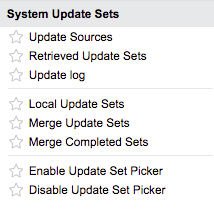

System Update Sets
| |
Note: This article applies to Fuji and earlier releases. For more current information, see System Update Sets at http://docs.servicenow.com
The ServiceNow Wiki is no longer being updated. Visit http://docs.servicenow.com for the latest product documentation. |
Contents
1 Overview
An update set is a group of customizations that can be moved from one instance to another. This feature allows administrators to group a series of changes into a named set and then move them as a unit to other systems. In most cases, update sets allow customizations to be developed in a development instance, moved to a test instance, and then applied to a production instance.
Before using update sets, review the Getting Started with Update Sets page.
2 Update Sets Process
A common process for developing customizations with update sets involves moving changes from development to test to production instances:
- Create an update set on the development instance.
- Make customizations and changes on the development instance.
- Mark the update set as Complete.
- Log in to the test instance and retrieve the completed update set from the development instance.
- Commit the update set on the test instance, and test customizations thoroughly.
- If the update set has problems in the test instance, repeat steps 1 - 5 to develop the fix on the development instance with another update set.
- Log in to the production instance and retrieve the completed update set from the development instance. If the update set required a fix, retrieve both update sets.
- Commit the update set on production. If the update set required a fix, commit both update sets in the order they were made.
If your development environment consists of only two instances, you can combine your development and testing instances into a single staging instance. For example:
- Create an update set on the staging instance.
- Make customizations and changes on the staging instance.
- Mark the update set as Complete.
- Test customizations thoroughly on the staging instance.
- If the update set has problems, repeat steps 1 - 4 to develop the fix on the staging instance with another update set.
- Log in to the production instance and retrieve the completed update set from the development instance. If the update set required a fix, retrieve both update sets.
- Commit the update set on production. If the update set required a fix, commit both update sets in the order they were made.
To learn more, see Using Update Sets.
3 Update Sets Tables
Each update set is stored in the Update Set [sys_update_set] table, and the customizations that are associated with the update set, which are entries in the Customer Update [sys_update_xml] table, appear as a related list on the update set record.
When a tracked object is customized, a corresponding record is added or updated in the Customer Update [sys_update_xml] table and is associated with the user's current update set. The associated application file properties are tracked and transferred along with the customized object in a single update record. A corresponding record is also added to the Versions [sys_update_version] table.
The Customer Update table contains one record per customized object, per update set. The Versions table contains one record per change to a customized object.
- Administrators can compare two versions and revert to a specific version of an object.
- Administrators can suppress versions for specific tables.
- Administrators can specify fields on tracked tables that you can change without skipping updates to the rest of the record.
| |
Note: Do not directly modify Customer Updates [sys_update_xml] records. |
4 How the system determines the default update set (Fuji)
Only one update set can be the default set for any scope. To set an update set to be the default set, you set the Default set field to true.
When you set Default set = true, the following actions occur:
- The update set becomes the default update set for its scope
- The system sets Default set = false for all other update sets with the same scope. (This ensures that there is only one default update set for each scope.)
4.1 Global default update set
The global default update set is the set where Default set = true and application scope is global.
The global default update set (regardless of the Name of the set) provides system functionality and should not be changed, deleted, or moved between systems. Use this update set to make changes to an instance without adding the changes to any user-created update sets.
4.2 When the system auto-generates a default update set
At all times, to ensure that no updates to an instance are lost, the system ensures that there is a default set for the user’s scope. If the system finds that a default update set does not exist (or is marked Ignored or Completed) for the current scope, then the system auto-generates an update set and sets Default set = true. Here are some common cases:
4.2.1 Upon first login
The very first time that an admin logs in, the system sets the system’s global default update set as the admin’s update set. In addition, the application picker sets the admin’s Application scope to global.
If a global default update set does not exist (or is marked Ignored or Completed), the system creates a new update set for the global application scope and performs the following actions:
- The system sets Default set = true for the new set.
- The system sets the name of the new set to start with the name of the former default set and appends the next numeral (in the sequence SetName, SetName 1, SetName 2, …, SetName n).
- The system sets the newly created set as the admin’s update set.
4.2.2 When a user marks the default set for a scope as Completed or Ignored (not a recommended practice)
When a user marks the default set for a scope as Completed or Ignored, the system immediately auto-generates a new default set for the scope.
4.2.3 Changing application scope
If you change application scope and: Your preferred update set is Complete or Ignored and there is no In-Progress default update set for the new scope, then the system auto-generates a default update set for the scope.
5 Default update sets (Eureka and earlier)
All update sets are global (there is no concept of scope).
The system determines which update set is the default set based on the state and the sort order of the names of the update sets -- the first default update set lexicographically that is in the In Progress state is the default set. For example, for an instance with the following update sets, Default 1 is Completed and Default 2 is In Progress. Therefore, Default2 is the default set:
ASet, BSet, Default, Default 1, Default 2, Default 3, Default 4
5.1 Naming non-default sets
For any update set that should not be a default set, do not start the name with the text “Default”.
5.2 Upon first login
The very first time that an admin logs in, the system sets the system’s default update set as the admin’s update set. If a default update set does not exist (or is marked Ignored or Completed), the system creates a new update set and performs the following actions:
- The system sets the name of the new set to start with “Default” and appends the next numeral (in the sequence Default, Default 1, Default 2, …, Default n).
- The system sets the newly created set as the admin’s update set.
6 Determining Which Customizations Are Tracked
Update sets can track customizations to application tables, fields, and records. Update sets track customizations under these conditions:
- Where the table has an update_synch dictionary attribute.
- Where there is a special handler to track changes to multiple tables.
- Where the administrator has not specifically excluded a field from updates.
In general, update sets capture configuration information but not task or process data. For example, update sets track service catalog item definitions and related configuration data like variables and variable choices. However, if you test the service catalog by placing orders, the order requests, items, and catalog tasks are not tracked by update sets.
Update sets have a limited capacity to transfer data as application files. This is intended to provide demo data for applications. For larger data transfers export data and import it with an import set or import set web service.
6.1 The update_synch Attribute
To see a list of tables on which customizations are tracked, navigate to System Definition > Dictionary and filter on attributes CONTAINS update_synch.
A default rule blocks the use of the update_synch attribute on a table for which it is not predefined to avoid the following issues:
- Some core tables require special update handling because they represent information on multiple tables. When the update_synch attribute is added to these tables, duplicate update records are created, causing major conflicts that are difficult to troubleshoot and repair.
- Using the update_synch attribute to migrate data records between instances can cause performance issues, because it is not intended for this purpose. To migrate data, use an instance-to-instance import.
| |
Warning: Do not add the update_synch attribute to a dictionary record. When improperly used, this attribute can cause major performance issues or cause the instance to become unavailable. Adding this attribute is not supported. |
6.2 Special Handlers
Some changes require special handlers because they represent information on multiple tables. These changes are packaged into one update set entry so that all records are properly updated when the customization is committed. The following changes are tracked with special handlers:
- Choice lists
- Dictionary entries
- Field labels
- Form sections
- Lists
- Related lists
- Workflows
6.2.1 Choice Lists
Update sets store both new and updated choice options as separate records in the Update Version [sys_update_version] and Customer Update [sys_update_xml] tables (starting with the Eureka release). For example, suppose you create a new Activity [u_activity] table that extends the Task table and add a new choice option to the Task state field that is only visible for your extended table (for example, My State). When you publish these changes as an update set, the update only contains update and version records for the choice you added to the u_activity table. The choice options in the task table are unaffected. In addition, you have the option to move the u_activity table and its associated choice to a separate application without affecting the default ServiceNow task application.
In versions prior to Eureka, choice option updates were collected into a single update/version record. For example, suppose you create a new Activity [u_activity] table that extends the Task table and add a new choice option to the Task state field that is only visible for your extended table (for example, My State). When you publish these changes as an update set, the update contains all existing choice options from the task table as well as choices from the u_activity table.
6.2.2 Dictionary Changes
Update sets prevent you from applying changes that result in data loss such as:
- Removing tables
- Changing a column's data type
Update sets do not track the removal of tables from the system dictionary. Instead, customers must manually remove tables from the target instance.
While update sets track data type changes, the target instance skips any change that results in data loss and instead adds a log message about the action. Customers can use the log to manually make data type changes on the target instance.
| |
Note: Update set previews no longer check for type mismatch problems since the target instance skips changes resulting in data loss (starting with the Dublin release). |
6.3 Homepages and Content Pages
Homepages, content pages, and Performance Analytics dashboards are not added to update sets by default. You must manually add pages to the current update set by unloading them. See:
- Adding Homepages to Update Sets
- Adding Content Pages to Update Sets
- Adding Performance Analytics Dashboards to Update Sets
6.4 Application Changes
The system creates a separate update set for each application that only contains changes associated with the application. This ensures that each application's access settings are properly evaluated and applied when committing update set changes.
This feature is available starting with the Fuji release.
7 Menus and Modules
To access update sets features, use these modules under the System Update Sets menu.
|
 System Update Sets application |
|
{kind=link}
8 Enhancements
8.1 Fuji
- Tracks each application in a separate update set.
- Tracks workflows with a single update record that only contains the latest version of the workflow as a Workflow update type.
8.2 Eureka
- Requires remote instances be on the same major version as the local instance to retrieve update sets.
- Allows update sets to store choice list options as changes to an extended table rather than changes to a parent table.
8.3 Dublin
- The Update Source table label is changed to Remote Instance, and the table is used both to retrieve remote update sets and to define relationships between instances in team development.
- You can test the connection when defining a remote instance. If a connection fails, a warning message identifies the reason the connection was unsuccessful. You must establish connectivity before you can save the connection settings.
- When you retrieve update sets from a remote instance, the confirmation page provides messages about how many update sets were transferred and which were ignored.
- You cannot edit remote update set records.
- When you preview update sets, the completion page provides messages about how many problems are detected. Collisions are detected as problems. The default proposed action for resolving any problem is Commit.
- Before you commit an update set, you must address all problems. When you have chosen to either accept or skip each problematic update, the Commit Update Set action becomes available.
- You can preview update sets that have been backed out. You cannot preview update sets that have been committed.
- Update records corresponding to dictionary entries can apply database changes that do not result in data loss. An update record with a type of Database field(s) is no longer required.
- When you create a table, update records are created for the table record on the Table [sys_db_object] table and the collection record on the Dictionary Entry [sys_dictionary] table.
- You can revert database changes.
- You can merge update sets in any state, including completed update sets. You can use filters to find the update sets you want to merge.
- In the Versions [sys_update_version] table, the State field shows whether version is or has ever been loaded on the instance. For the current version of a record, the field is highlighted in green.